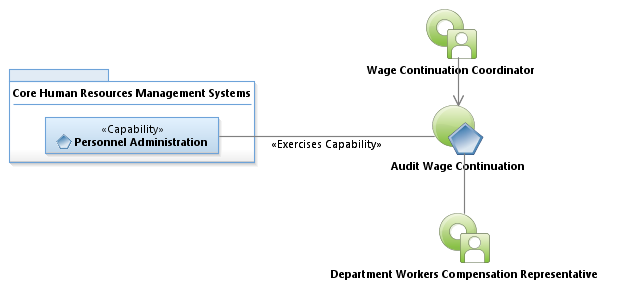
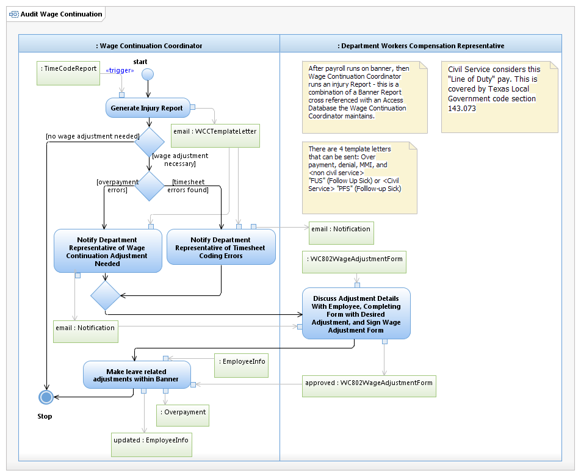

Use Case Model: Audit Wage Continuation
Architect: Aaron Brown, IT Enterprise Architect Senior
Date Last Modified: 04/5/2013
User Review: Leslie Milvo, Cindy Steffen, Shelly Sheppard
Date: 4/5/2013
The Wage Continuation Coordinator conducts an audit of the employee continuation hours within banner and compares it to the present state of the wage continuation case. This audit checks for timesheet errors, determines if over payment has occurred, and addresses the need and provisioning of Serious Injury Supplement (SIS), should the employee qualify.There are 4 template letters that can be sent: Overpayment, Denial, MMI, and "FUS" (Follow Up Sick) as a result of this process
Follow link to Role Definitions

Use Case Model: Audit Wage Continuation

Activity Model: Audit Wage Continuation